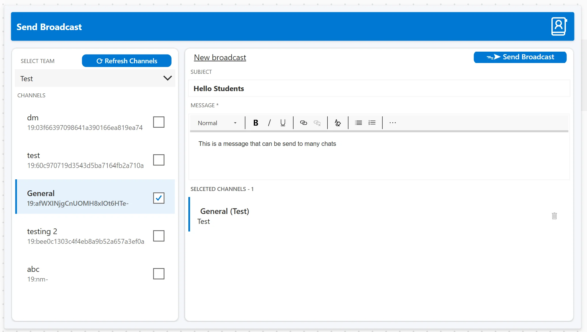
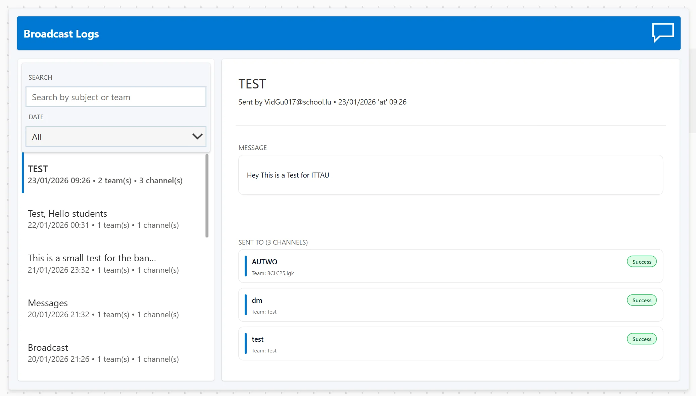

The Problem
Sending the same message to 20+ Teams channels manually is tedious. You have to open each one, copy-paste, and hope you didn't forget any. There's no way to track what was sent where.
I flipped that around: select all channels at once, write the message once, and send it everywhere with one click, while keeping a complete log of each destination.

Main broadcast interface: channel selection, message composition, and real-time sending status. Uses real Teams with test channels to avoid spamming school channels during development.
Under the hood
Three Power Platform services, cleanly split into UI, logic, and data layers - plus the native Teams connector for delivery.
Power Apps - Canvas frontend
- Single-screen UX: channel multi-select, a subject line, and a rich message body live on one canvas, with input validation before anything can be sent.
- Explicit state machine: idle → sending → success/error drives every button and indicator, so the UI always reflects what the backend is actually doing.
- Duplicate-send guard: the send button locks while a broadcast is in flight, preventing the classic double-click that would post everything twice.
Power Automate - Two cloud flows
- Fetch flow: on app open (or "Refresh channels") it pulls every Team and channel the user can access and hands the list back to Power Apps.
- Broadcast flow: an apply to each loop posts the message to every selected channel through the native Teams connector.
- Per-channel results: each post returns success or failure individually, so a single failed channel never blocks the rest of the broadcast.
Dataverse - Audit store
- Every broadcast recorded: subject, body, sender, timestamp, target channels, and the per-channel delivery status are written on each send.
- Searchable history: the log screen lets you search and filter past broadcasts, turning "did it actually go out?" into a one-second lookup.
Microsoft Teams - Delivery
- Native connector, no custom code: messages are posted through Microsoft's own Teams connector, so delivery and permissions follow the tenant's existing rules.
- Confirmed delivery: the connector's response feeds straight back into the status indicator and the Dataverse audit trail.
Why I built it
A teacher mentioned how much of a chore it was to send the same announcement to 20+ Teams channels by hand - open each one, copy, paste, repeat, and still wonder if one got missed. It was a real, boring problem begging for automation.
I chose Power Platform on purpose: it's the low-code stack the school and many organizations already run on. The challenge was to treat it like real engineering - separate UI, logic, and data layers, proper state management, and an audit trail from day one.
The result is a tool teachers, students, project leads, and directors can all use to push consistent messaging across many channels - and a graded project that proves low-code can still be built like a product.

Broadcast logs: complete history with search, filters, and per-channel delivery status
Lessons learned
Low-code ≠ low-quality
With real design patterns - layered architecture and clean state - low-code tools can absolutely be production-grade.
State management is everything
For async sends, a clear idle/sending/success/error model is what keeps the UI honest and prevents double posts.
Work around the platform
Premium features and quirky conventions forced creative workarounds without letting the UX suffer for it.
Feedback beats guessing
Users need clear status at every step. Without it they re-click, panic, and lose trust in the tool.
Project Info
Solo school project presented in January 2026. Graded exercise using Power Platform to solve a real organizational problem.
Presentation
View the project presentation slides used during the graded demonstration.
Download Presentation (PDF)